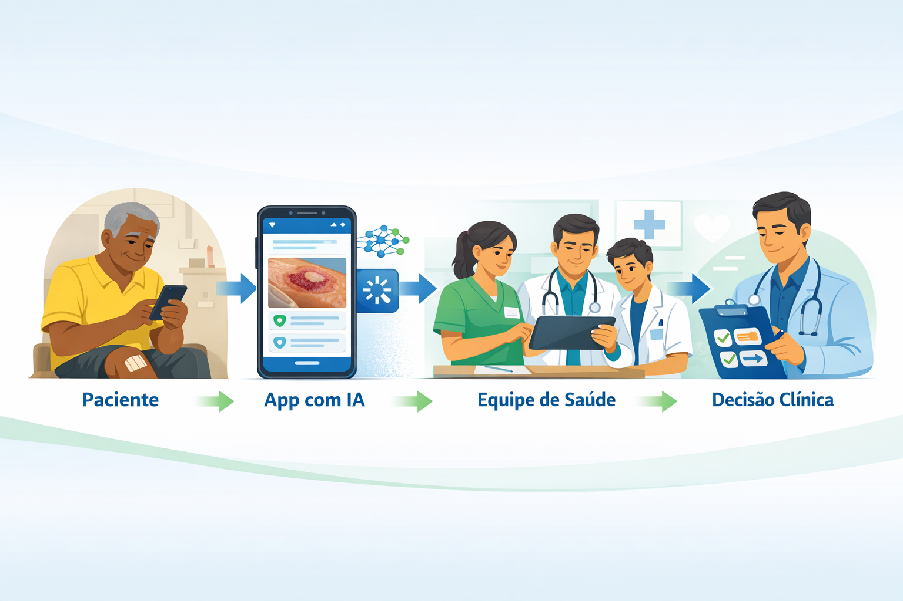
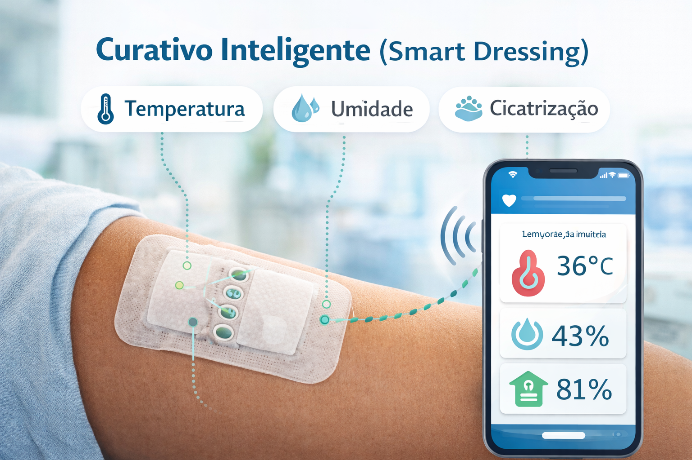

O problema
Uma epidemia silenciosa com alto custo humano e econômico
Feridas crônicas são aquelas que não completam o processo cicatricial no período esperado — geralmente 3 meses — e exigem abordagens terapêuticas especializadas e contínuas. Sua prevalência global é expressiva e seu impacto na qualidade de vida dos pacientes é profundo, afetando mobilidade, sono, humor e vida social (Raizman et al., 2025).
O cenário está mudando: tecnologias digitais emergentes estão transformando radicalmente a forma como essas feridas são avaliadas, monitoradas e tratadas — deslocando o cuidado do ambiente hospitalar para o domicílio e do julgamento subjetivo para dados objetivos e em tempo real (BioStem Technologies, 2024).
Fronteiras do conhecimento
Sete inovações que estão mudando o campo
A seguir, as principais tendências identificadas na literatura recente (2024–2025) e sua relação com o telemonitoramento de feridas crônicas.
Avaliação por Inteligência Artificial
Ferramentas como AutoDepth identificam bordas da ferida, calculam dimensões e localizam a área mais profunda em tempo real. O SmartTissue quantifica tipos de tecido — epitelial, granulação, esfacelo e escara — independentemente do tom de pele (Raizman et al., 2025). A IA elimina a subjetividade do olho clínico e padroniza o registro, algo central para protocolos de telemonitoramento.
(Raizman et al., 2025)
Aplicativos de Monitoramento Remoto pelo Paciente
Estudo de viabilidade publicado em 2025 mostrou que pacientes com feridas crônicas capturaram uma mediana de 13 imagens por ferida, enviadas a cada 8 dias. A equipe clínica revisava remotamente e tomava decisões terapêuticas — resultado: fechamento mediano de 80% da área da ferida (Raizman et al., 2025). O modelo é análogo ao que o G10 já pratica com o PET-Saúde Digital.
(Raizman et al., 2025)
Teleconsulta como Modelo Estrutural de Cuidado
Revisão sistemática confirmou que teleconsultas melhoram a confiança do paciente, a autoeficácia profissional dos enfermeiros e o senso de segurança ao longo do tempo. O sucesso depende de acesso à tecnologia confiável, treinamento adequado e abordagem centrada na pessoa (WCEI, 2025). Esses pilares são diretamente replicáveis no contexto do SUS e nas ações educativas do G10.
(WCEI, 2025)
IA Generativa no Treinamento Clínico
A IA generativa está aprimorando a formação em cuidados com feridas por meio de aprendizado baseado em simulação e cenários clínicos personalizados — capacitando profissionais a aplicar insights de IA à beira do leito (WCEI, 2025). Para o G10, isso representa uma oportunidade de inovar nos materiais didáticos e nas atividades de extensão junto à comunidade acadêmica.
(WCEI, 2025)
Curativos Inteligentes com Sensores
Curativos equipados com sensores monitoram temperatura, pH e exsudato em tempo real, fornecendo dados contínuos à equipe clínica (BioStem Technologies, 2024). O dispositivo a-Heal (UCSC) combina câmera e IA para detectar o estágio de cicatrização e liberar medicamento ou campo elétrico de forma personalizada — em testes pré-clínicos, acelerou a cicatrização em cerca de 25% frente ao cuidado padrão (UCSC News, 2025).
(BioStem Technologies, 2024; UCSC News, 2025)
Medicina Regenerativa e Substitutos de Pele
Avanços em bioengenharia estão criando substitutos de pele que mimetizam a estrutura e a função do tecido natural, acelerando a cicatrização de feridas complexas. Terapias com células-tronco, enxertos de células geneticamente editadas e bioimpressão 3D estão em expansão, oferecendo perspectivas para pacientes com feridas não responsivas ao tratamento convencional (Specialty Wound Care, 2025; WCEI, 2025).
(Specialty Wound Care, 2025; WCEI, 2025)
Diversidade de Tonalidade de Pele nos Modelos de IA
Pesquisas recentes evidenciam que o tom de pele é fator crítico no cuidado de feridas: peles mais escuras apresentam menor conteúdo hídrico e maior perda transepidérmica de água, aumentando o risco de lesão por pressão (Wounds International, 2025). Modelos de IA estão sendo redesenhados para melhor representar a diversidade global — como a escala Monk Skin Tone, com 10 gradações —, tornando a avaliação automatizada mais justa e inclusiva. Para o G10 e o contexto brasileiro, com população diversa e miscigenada, essa discussão é especialmente relevante.
(Wounds International, 2025)
Para o G10
O que essas inovações significam na prática do telemonitoramento?
"A tecnologia não substitui o toque humano — ela é um facilitador: quando o profissional de saúde monitora a cura remotamente e identifica problemas precocemente, pode ser mais responsivo e presente com seus pacientes."
— Net Health, 2026 (tradução livre)-
Qualidade e padronização do registro fotográfico
A adoção de protocolos de imagem baseados em IA pode reduzir a variabilidade subjetiva nas avaliações remotas, fortalecendo a confiabilidade dos dados coletados pelo G10 nas teleconsultas.
-
Embasamento científico para publicações acadêmicas
A evidência de 80% de redução de área com monitoramento remoto por app (Raizman et al., 2025) valida o modelo já praticado pelo G10 e pode ser citada em produções científicas do grupo.
-
Inovação nos materiais educativos
O uso de IA generativa para treinamento clínico abre caminhos para o G10 desenvolver casos simulados e materiais interativos para as atividades de extensão e ensino junto à UFPel.
-
Equidade e contexto brasileiro
A discussão sobre diversidade de tonalidade de pele em modelos de IA é particularmente urgente no Brasil. O G10 pode protagonizar essa pauta ao incorporá-la nas ações de educação em saúde e na avaliação de ferramentas digitais para uso no SUS.
-
Expansão do modelo de cuidado domiciliar
Com curativos inteligentes e monitoramento remoto se tornando realidade, o G10 está alinhado à tendência global de descentralização do cuidado — levando qualidade assistencial até pacientes com limitações de mobilidade ou acesso geográfico (Frost & Sullivan, 2025).
🔬 Horizonte: o que vem a seguir (2025–2030)?
O setor de cuidados avançados com feridas avança em direção a diagnósticos por IA, sensores vestíveis, substitutos de pele bioengenheirados e scaffolds 3D até 2030 (Frost & Sullivan, 2025). Nanorrobôs para intervenções precisas, diagnósticos vestíveis contínuos e curativos biodegradáveis inteligentes surgem como possibilidades próximas. Para o G10, acompanhar essa evolução é tanto uma oportunidade de pesquisa quanto de comunicação científica com a sociedade.
Visualização
Da ferida ao dado: o fluxo do telemonitoramento moderno


O que fica
A confluência entre inteligência artificial, telemonitoramento e bioengenharia está transformando feridas crônicas de um problema de difícil manejo em um campo de possibilidades clínicas e tecnológicas. O G10 — ao unir atenção acadêmica, extensão universitária e cuidado centrado no paciente — está no centro dessa transformação. Cada inovação descrita aqui não é um horizonte distante: é um argumento científico para o que o grupo já faz e um convite para onde pode avançar.